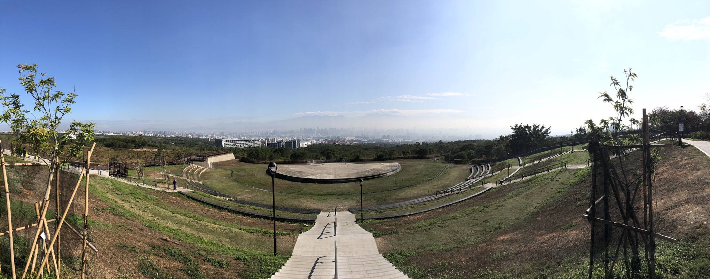
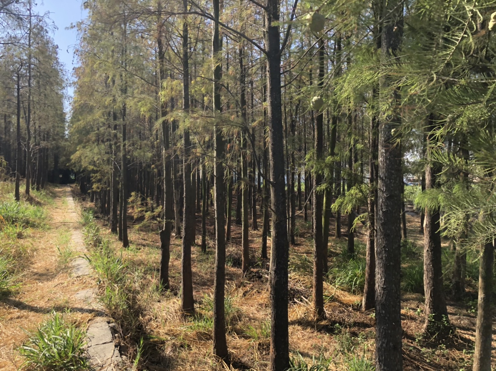

景點旅遊指南
首頁
聯絡我們


大肚山
景點旅遊指南
台中大肚山落羽松
位於私人土地上種植，整齊排列於一片土地上， 春天會開花並長出新芽；入秋後葉片會轉紅褐色； 冬天則是一片葉子都不剩的掉落。從遠處看可看見向隧道一般的景象，十分幽靜由於實地走訪時機 不對和氣候的異常，無法拍攝到轉紅的景色。 與網路上查詢到的資料有落差的點是落羽松的面積不 知道是不是地主有減少種植的量或是其他外在因素，實際探訪時的面積十分的狹小，沒有給人有種
詳細介紹
地點
圖片
台中大肚山落羽松
學名:Taxodium distichum(L.)A.Rich 科名:杉科(落羽松屬) 別名:美國水松、落羽杉 型態:高度可達50公尺粗度可達5公尺；樹皮為棕色， 小羽葉為鮮綠色背面帶有白色色澤， 小羽葉上方有線形葉(羽狀扁平成列)淡綠色下方則呈黃綠色。 雄花呈卵形排排列呈下垂圓錐每個花約有6~8枚雄蕊，每個雄蕊有4枚花藥，雌花生於枝頂 ， 瓦狀排列的心皮，每心皮有2胚珠。 毬果為圓形有短梗下垂，成熟後為淡褐色有白色的粉，果鱗10~12片，種子2枚。
開車路線：北２高 一＞ 龍井交流道下 一＞ 右轉向上路（6,7段後）一＞ 左轉中華路一段 一＞ 約2.3公里見便利商店右轉 一＞ 沿路順著大忠國小招牌即可抵達